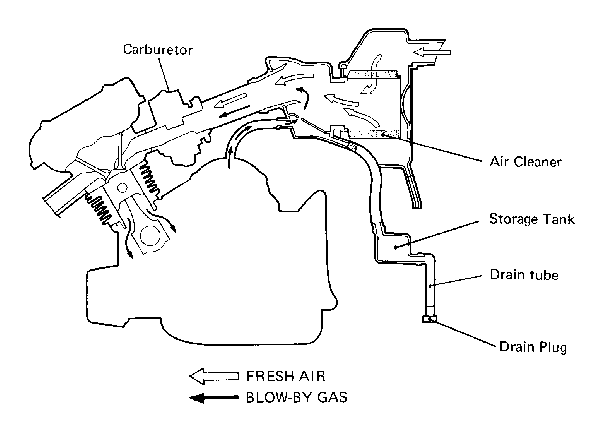
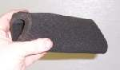
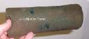
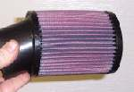
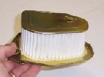
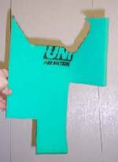
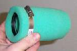

AIR CLEANERS

according to the cleanness of my hands hath he recompensed me."
2 Samuel 22:21
¶ Air cleaners are a real necessity. You are right to clean them and clean them often. You will be recompensed with long engine life for your righteous efforts. I once read a test on how much dirt was needed to ruin an engine. It was almost nothing. Seems the dirt gets imbedded in the soft aluminum of the piston and then just grinds away like sandpaper. Always run your bike with the air cleaner installed.
Most motorcycle air cleaners are one of three types.
- Oiled foam,
- Oiled fabric and
- Dry paper
  
Fabric filters, have a surgical type of fabric inside a metal mesh. They work very well and seem to flow a lot of air. They use a special oil you get from the air filter maker (K&N). Clean them with soap and water, let dry, and then re-oil. With care, they last quite a while.


You have to be careful changing air filter types on modern motorcycles. The seemingly restrictive airbox and air filter are often designed that way. If you change the airbox or air filter, it can make the bike run too rich or too lean. I had one V-twin Honda come in with a crack in the airbox. It would barely run, missing and popping. I replaced the air box (Quite the job.) and nothing else. It then ran perfectly. Another time I cleaned the carbs on a Kawasaki 440 twin. I tried to start it without it's pitiful, tiny, little air cleaner. It would barely run. Put the little foam air cleaner in and presto, changeo, runs great. Same with a Suzuki GS850. Pull the air cleaner cover and it would not idle. Put it back on, idles great. So remember, if you change things, you may have to re-jet the carb, and that's not always so easy. Then again maybe not. I've run across lots of bikes both street and dirt, that don't seem to mind a filter or airbox change at all. You just never know.

A word of warning here. Don't use just any rubber tube to replace an old, hard, shrunk, air tube. If the rubber isn't made for gas, (like a radiator hose) it can swell and/or flake and fall apart. You might find a rubber, gas filler tube, from an auto parts store. This is the tube that goes from the gas tank to the gas filler neck on most cars. It is made for gas. They come in a number of sizes, but most of them are too big, and they are a bit pricey. Still, any port in a storm. One might work for you. If you are forced to use something like a radiator hose, run it for an hour or two and then wait overnight and take it off and check it. If it looks OK, run it a bit longer, but keep checking it often for swelling or some other kind of failure.
As any air cleaner works, it gets dirty. For a while, on filter elements that you oil, the dirt may actually help the filter work by attracting more dirt. However, sooner or later the dirt starts to plug up the filter and this makes the engine suck too much gas. This causes rich running that wastes gas and carbon fouls the spark plug. The cure? Clean or replace the air cleaner at a regular interval. If you live in a dusty, rural area, you will have to service the air cleaner more often than if you ride in the city.
A guy rode up to my shop on a RD350 Yamaha twin. He says it's running really ratty and that he's tried everything to fix it but it still carbons up the plugs. Says he's gone through dozens of plugs. He leaves it. So I look at the spark plugs and they are badly carbon fouled. I put in new plugs, tuned it up, checked the air cleaner, checked the exhaust, checked everything I could think of, but it ran great. I rode it all over the place and I couldn't get it to foul the plugs. He comes back to pick it up. He doesn't know what to think. Says he'll try it out. It's real hot out so he takes his shirt off, lifts the seat and stuffs the shirt under the seat and jams the seat down... effectively plugging off the airbox inlet. After I pointed this out, he had no further trouble.
Not only shirts and dirt can plug up the air cleaner. I've seen mice and wasps build nests in the airbox too. If the engine is well worn it can start to pump a lot of oil vapor out of the engine breather. This can plug up the air cleaner too. Sometimes you will need to put a filter on the engine breather hose, to keep dirt out of the engine, and plug off where the breather hose enters the airbox.
Take good care of your air cleaner. If you don't, sooner or later you will regret it.
 |
 |
Copyright © 1999-2015 dansmc.com. All rights reserved.